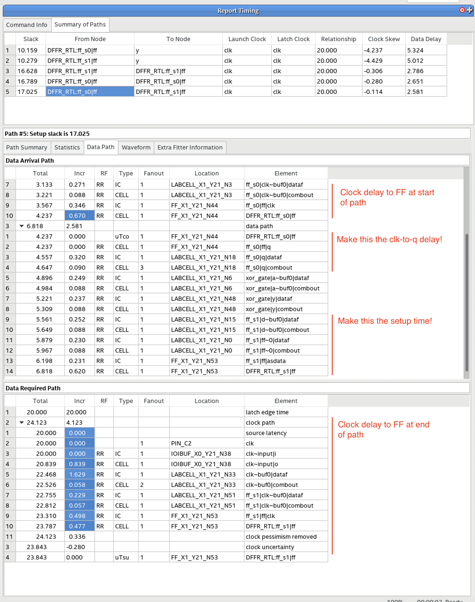
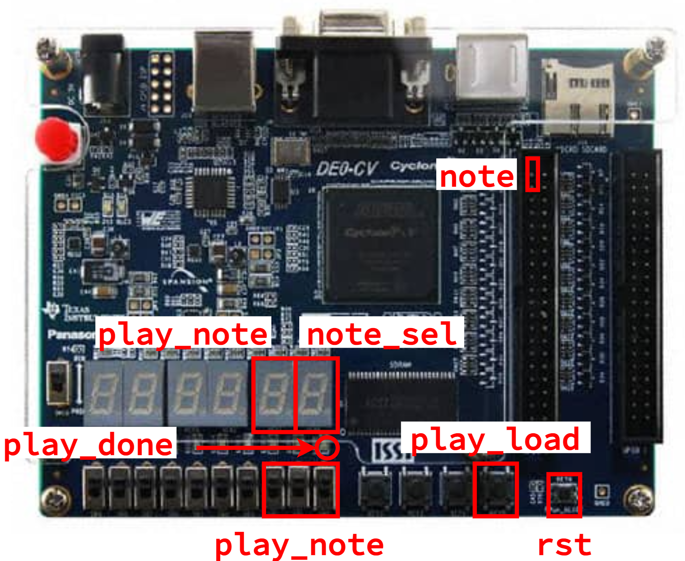
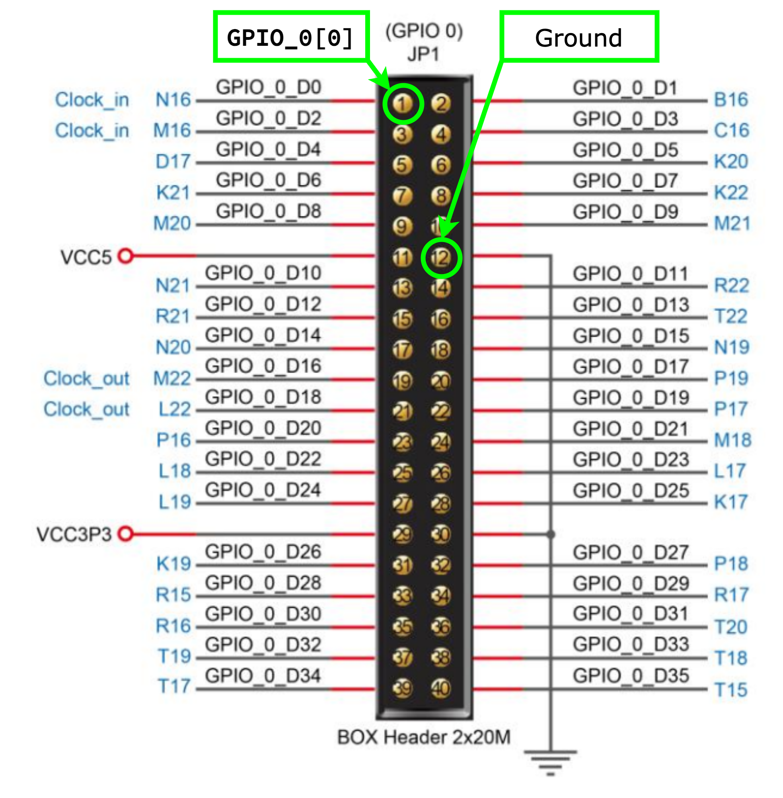

Lab 3 (Parts C & D): Music Player - FPGA Analysis/Prototype and Report
Lab 3 is meant to give you experience designing, implementing, testing, and prototyping combinational and sequential logic using the Verilog hardware description language. The lab reinforces several lecture topics including sequential logic gates, finite-state machines (FSMs), and sequential building blocks. More specifically, the lab will give students experience with: latches, flip-flops, and registers; Moore and Mealy FSMs; and counters. The lab will continue to provide opportunities to leverage the three key abstraction principles: modularity, hierarchy, and regularity. The lab will also enable students to better understand the connection between simulation and prototyping.
With the introduction of sequential logic, our designs can now model more complex and interesting designs; in particular, designs that can have real-world applications. You should have already worked in simulation to verify your music player and all of the submodules in Lab 3 Parts A and B. In Lab 3 Part C, we will be using the FPGA to emulate these designs, connecting them to real-world phenomena such as music. By the end of the lab, you should be able to play a simple song using your design, and understand the digital logic that allows it to happen.
This handout assumes that you have read and understand the course tutorials, attended the discussion sections, and successfully completed Labs 1-2. Here are the steps to get started:
- Step 1. Find your lab partner
- Step 2. Find a free workstation
- Step 3. Ask the TAs for a lab check-off sheet (each student needs their own check-off sheet)
Throughout this handout you will see two kinds tasks: lab check-off tasks and lab report tasks.
For each lab report task you must take some notes, save a screenshot, and/or record some data for your lab report. Students can start working on their lab report during their lab session, but will likely need to continue working on their lab report after the lab session. The lab report is due three days after your lab session at 11:59pm.
For each lab check-off task you must raise your hand and have a TA come to check-off your work. The TA will ask you the questions included as part of the lab check-off task and the assess your understanding using the following rubric: mastery; accomplished; emerging; beginning. If the TA and students together feel the students have not mastered the lab check-off task, the students are encouraged to take a few minutes and try again.
In contrast to previous labs, Lab 3 is much more application-oriented. We will spend less time exploring the design space, and more time exploring the applications of our design. Because of this, you will need some additional hardware:
- A piezoelectric ("piezo") buzzer. This is a tiny speaker that can play our notes
- Four jumper wires:
- Two F-M jumper wires. These have one "input" and one "output"
- Two F-F jumper wires. These have two "inputs"
- A USB Drive. Some of the lab report tasks will require you to capture waveforms from the oscilloscope. You should follow the instructions to save these on your USB Drive, and transfer them to your own laptop before leaving the lab.

Real hardware can often be delicate and fragile. As a general rule, please do not "force" anything together, and take time and caution when connecting different components. If you have any questions or need assistance, please ask the TAs.
Lab Check-Off Task 1: Setup FPGA Board and Hardware Supplies
Request an FPGA board and the hardware supplies from the TAs. The TAs will record the board number and the hardware supply kit number on your check-off sheet. Use the power cord to plug the FPGA board into an outlet, and use the USB cable to plug the FPGA board into the workstation. Do not use the other hardware supplies until instructed to do so.
1. Simulation of a Music Player
Before starting to work on an FPGA prototype, you must make sure you have
a working Verilog hardware design that has been thoroughly tested in
simulation. One student should start VS Code on the workstation, log into
the ecelinux servers, source the setup script, and make sure their
individual remote repository is up to date.
Where XX is your group number. Now run all of the tests from a clean
build to ensure your design is fully functional.
% cd ${HOME}/ece2300/groupXX/lab3-music
% trash build
% mkdir build
% cd build
% ../configure
% make check
We now need to get the files for your design from ecelinux onto the
workstation. This requires multiple steps.
-
Step 1. Click Microsoft Edge on the desktop to open a web-browser on the workstation to log into GitHub and then find your repository
-
Step 2. Start PowerShell by clicking the Start menu then searching for Windows PowerShell
-
Step 3. Clone your repo onto the workstation by using this command in PowerShell (where
netidis your Cornell NetID, notice we are using https!):
-
Step 4. In the Connect to GitHub pop-up, click Sign in with your browser
-
Step 5. You may be asked for your GitHub username again and you may be asked to authorize the Git Credential Manager; click authorize git-ecosystem
-
Step 6. Verify that you have successfully cloned your repo by changing into your repo and using
treeon the workstation:
Lab Check-Off Task 2: Verify Tests
Show a TA that your hardware designs are passing all of your tests. The TA will ask one student to explain the purpose of the note player control FSM and to show the TA specific lines of code in the GL and RTL implementation that make this a Moore FSM. The TA will ask the other student to explain the purpose of the music player control FSM and to show the TA specific lines of code in the RTL implementation that make this a Mealy FSM.
2. Setup Quartus Project
Click Quartus (Quartus Prime 19.1) on the desktop to start Quartus, and click Run the Quartus Prime software. You might need to try starting Quartus twice. Setup a new Quartus project using the New Project Wizard:
- Directory, Name, Top-Level Entity
- Working directory:
C:\Users\netid\lab3 - Name of this project:
lab3 - Name of top-level design entity:
lab3 - Click Next
- Working directory:
- Directory does not exist. Do you want to create it?
- Click yes
- Project Type
- Choose Empty Project
- Click Next
- Add Files
- Click triple dots to right of File name
- Click on This PC, then navigate to your cloned repo by choosing Windows (C:) > Users > netid > netid where netid is your Cornell NetID
- Shift-click on every Verilog hardware design file (do not include any test files)
- Click Open
- Click Next
- Family, Device, and Board Settings
- Click Board tab
- Family: Cyclone V
- Select DE0-CV Development Board
- Make sure Create top-level design file is checked
- Click Next
- EDA Tool Settings
- Click Next
- Summary
- Click Finish
Since we are now using RTL modeling, there is one new step, similar to Lab 2. You must choose Assignments > Settings from the menu. Then select the category Compiler Settings > Verilog HDL Input and under Verilog version click SystemVerilog. Then click OK.
3. Synthesize, Analyze, Integrate, and Configure Counters
We will start by synthesizing and analyzing the two different counter implementations. Once we better understand the tradeoffs in these implementations, we can make high-level conclusions about their tradeoffs.
Lab Report Task 1: Gate-Level Counter Block Diagram
Make sure you have the block diagram for your gate-level counter which you prepared in Part A. If you did not draw a block diagram in Part A, the you must draw a diagram now. Save this diagram since you will be annotating it later in the lab.
Lab Check-Off Task 3: Discuss Gate-Level Counter Block Diagram
Show a TA your block diagram. Explain how loading a new value works. Explain how the done signal is implemented.
3.1. Synthesize and Analyze GL Counter
To synthesize and analyze the gate-level counter in isolation first find
the Project Navigator pane and click on Hierarchy to display the
drop-down list. Choose Files and select the Counter_8b_GL.v file.
Right click on the file and choose Select as Top-Level Entity. Then
click on Files to display the drop-down list again. Choose Hierarchy
and confirm that Counter_8b_GL is shown as the only entity.
As in Lab 2, we need to create a timing constraint file. Unlike in Lab 2, we also now need to inform the tools that there is a clock signal as part of our design. Identifying the clock signal will make the tools work to ensure that our design has no setup or hold time violations. Similar to Lab 2, when finished, the design will either "meet timing" (i.e., the actual critical path delay is less than the constraint and there are no hold time violations) or "not meet timing" (i.e., the actual critical path delay is greater than the constraint or there are hold time violations).
Here are the steps to create a timing constraint file:
- Choose File > New from the menu
- Click Synopsys Design Constraints File
- Click OK
- Enter the constraints shown below
- Click File > Save from the menu
- Name the file timing.sdc
- Save the file in the lab3 directory
We will use the following initial constraints:
set_max_delay -from [all_inputs] -to [all_outputs] 20
set_min_delay -from [all_inputs] -to [all_outputs] 0
create_clock -name clk -period 20 [get_ports {clk}]
set_output_delay -add_delay -clock clk -max 0 [all_outputs]
set_output_delay -add_delay -clock clk -min 0 [all_outputs]
set_input_delay -add_delay -clock clk -max 0 [all_inputs]
set_input_delay -add_delay -clock clk -min 0 [all_inputs]
These constraints tell the FPGA tools that:
- Our critical path delay constraint is
20nsfrom all inputs to all outputs as well - We have a clock signal named
clk- There should be setup time violations with respect to
clkwhen the period is20ns - There should be no hold time violations with respect to
clk
- There should be setup time violations with respect to
- The output ports have a setup time of 0 (max constraint) and a hold time of 0 (min constraint)
- The input ports have clock-to-port propagation delay of 0 (max constraint) and a clock-to-port contamination delay of 0 (min constraint)
Now use the following steps to synthesize your design and then look at the RTL viewer, technology map viewer, and chip planner.
- Choose Processing > Start Compilation from the menu
- Wait 2-3 minutes for synthesis to complete
- RTL Viewer
- Choose Tools > Netlist Viewer > RTL Viewer from the menu
- Drill down in the hierarchy to see the netlist for the counter
- Does the RTL viewer match your expectations?
- Choose File > Close from menu to close the RTL viewer
- Technology Map Viewer
- Choose Tools > Netlist Viewer > Technology Map Viewer (Post-Fitting)
- Drill down into the subtractor all the way to see the implementation of the full adder
- Does the technology viewer match your expectations?
- Choose File > Close from the menu to close the technology map viewer
- Chip Planner
- Choose Tools > Chip Planner from the menu
- Identify where the logic used to implement your design is located in the FPGA
- Choose File > Close from the menu to close the chip planner
The next step is to analyze the area of your design.
- Choose Processing -> Compilation Report from the menu
- Under Table of Contents choose Fitter > Resource Section > Resource Usage Summary
- Look through the report to determine the number of combinational ALUTs (configurable look-up tables) that are used for your design
- Look through the report to determine the number of dedicated logic registers that are used for your design
You will be working to fill in this data table:
- https://docs.google.com/spreadsheets/d/1b0Ep9hQOy_K2F6YslZt8ExoQcgabWJIXPrI3lRXn1mI/edit?gid=0#gid=0
Make a copy of this table, and enter in the data for your ripple-carry adder with a 20ns critical path delay constraint. You can find the number of 7-input ALUts, 6-input ALUts, etc in the area report. You can find the dedicated logic registers also in the area report.
The final step is to analyze the timing (i.e., the critical path delay) of your design. We will analyze timing for the Slow 1100mV 85C Model which is the default choice in the Timing Analyzer.
- Choose Tools > Timing Analyzer from the menu
- Double-click Update Timing Netlist
- Choose Reports > Custom Reports > Report Timing from the menu
- Report Timing
- Clocks - From clock: clk
- Clocks - To clock: clk
- Targets - From: [get_registers *]
- Targets - To: [get_registers *]
- Report number of paths: 100
- Click Report Timing
- Identify the propagation delay of the displayed path
- Look at the actual critical path (i.e., Data Arrival Path) which shows the longest path from one of the inputs through your design to one of the outputs
- Choose File > Close from the menu to close the timing analyzer
Note that your GL counter will not meet timing. This is because the FPGA tools do not understand that your gate-level flip-flop is actually a register (check the number of dedicated logic registers in the area report to confirm this). The FPGA tools are designed to recognize specific RTL patterns and infer appropriate sequential logic, but they are simply not designed to recognize specific GL patterns. Even so, we can still analyze the critical path in our design.
We will use the following conventions when analyzing the critical path based on FPGA timing reports. The FPGA timing report will have three parts:
-
The clock part of the data arrival path: this is the delay from the clock pin to the flip-flop at the start of the path.
-
The data part of the data arrival path: this is the actual propagation path delay from one flip-flop to another flop-flop.
-
The clock part of the data required path: this is the delay from the clock pin to the flip-flop at the end of the path.
The following timing report illustrates these three parts:

The above image shows that you should count the delay from the start of the path until the signal leaves the initial flip-flop or register module as the clock-to-q delay, and you should count the delay from when the signal enters the final flip-flop until the end of the path as the setup time. If you select multiple cells in the Incr column and hover your mouse it will display a pop-up showing the sum of the delays along that portion of the path.
Also notice that the propagation path delay and the slack do not add up to the clock constraint. This is due to clock skew. Clock skew means the clock reaches the initial and final flip-flops at a different times. You can calculate the effective clock skew as follows:
The effective clock skew is different from what you will see in the timing report because the tools are using a more complicated calculation. For our purposes you should always use the effective clock skew as calculated above. A negative effective clock skew means the clock reaches the final flip-flop before it reaches the initial flip-flop. A positive effective clock skew means the clock reaches the initial flip-flop before it reaches the final flip-flop.
Enter the slack and critical path delay in the data table. The spreadsheet will calculate effective clock skew for you.
Lab Report Task 2: Collect Data for Gate-Level Counter
Save your completed data table with your analysis of the gate-level counter and include it in your report.
- When generating your timing report, select "File name" to save your timing report
- You will only need to collect 1 path for this portion
Draw the critical path on your block-level diagram. Annotate the clock-to-q delay, the propagation delay of each block along the critical path, and the setup time on your block level diagram. Save the critical path timing report text file and include it in your report. You only want to save the Data Arrival Path from the timing report text file. Do NOT include anything else from the timing report text file. You must format the critical path with a fixed-width font and size the font such that it fits on a single page. You might need to delete some rows from the critical path to make it fit. Try to make sure that the remaining rows still clearly show where the critical path goes. If you do not follow this requirements then we will ignore your critical path in the lab report.
Lab Check-Off Task 4: Discuss Gate-Level Counter Critical Path
Show a TA your data table and timing report. Explain why there are no dedicated logic registers. Show a TA the critical path on your block diagram and clearly show how the delays in the timing report correspond to the delays annotated on the block diagram.
3.2. Synthesize and Analyze RTL Counter
Use the same process to synthesize and analyze the RTL counter in
isolation. Remember to change that hardware module to be the top-level
entity. So find the Project Navigator pane and click on Hierarchy to
display the drop-down list. Choose Files and select the
Counter_8b_RTL.v file. Right click on the file and choose Select as
Top-Level Entity. Then click on Files to display the drop-down list
again. Choose Hierarchy and confirm that Counter_8b_RTL is shown as
the only entity.
Go through the same process of looking at the RTL Viewer, Technology Map Viewer, and the Chip Planner. Spend time looking at the Technology Map Viewer and try to figure out how the blocks in the Technology Map Viewer connect to your Verilog implementation. Go through the same process of determining the area utilization. Do the number of dedicated logic registers match your expectation? Go through the same process of conducting a timing analysis. Enter the area, slack, and critical path delay in the data table. The spreadsheet will calculate effective clock skew for you.
Your RTL counter should meet timing. This is because the FPGA tools do understand that your RTL flip-flop is actually a register (check the number of dedicated logic registers in the area report to confirm this). As mentioned above, the FPGA tools are designed to recognize specific RTL patterns and infer appropriate sequential logic. You will likely observe that the area is much less than the GL implementation and the critical path is much shorter. This because for the GL counter the tools were not able to actually do any timing optimization because they did not understand how the timing constraints connected to the GL flip-flop, while for the RTL counter the FPGA tools are able to do standard timing optimization.
Lab Report Task 3: Collect Data for RTL Counter
Save your completed data table with your analysis of the RTL counter and include it in your report. Save a screenshot of the technology mapper view for your RTL counter. Annotate this screen shot by circling what logic implements:
- (1) The storage element that keeps track of the current count
- (2) The logic that determines the subtracted count
- (3) The logic that determines what should be the next stored count
- (4) The logic that determines whether the counter is done
Clearly label each circle with the corresponding Verilog code snippet. Save the critical path timing report text file and include it in your report. You only want to save the Data Arrival Path from the timing report text file. Do NOT include anything else from the timing report text file. You must format the critical path with a fixed-width font and size the font such that it fits on a single page. If you do not follow this requirements then we will ignore your critical path in the lab report.
Lab Check-Off Task 5: Discuss RTL Counter Technology Mapping
Show a TA your data table and timing report. Justify why the number of dedicated logic registers makes sense. Show a TA your technology map screen shot annotated with Verilog code snippets. Explain to the TA the connection between the Verilog code and the actual low-level logic gates. Are we convinced that RTL modeling does indeed turn into low-level logic gates?
3.3. Integrate RTL Counter
We are now ready to demonstrate a counter FPGA prototype using the RTL
implementation. We need to change the top-level entity to be
DE0_CV_golden_top.v. Find the Project Navigator pane and click on
Hierarchy to display the drop-down list. Choose Files and select the
DE0_CV_golden_top.v file. Right click on the file and choose Select as
Top-Level Entity. Then click on Files to display the drop-down list
again. Choose Hierarchy and confirm that DE0_CV_golden_top is shown
as the only entity.
The New Project Wizard creates a top-level Verilog module for us which has ports for all of the switches, LEDs, seven-segment displays, and pins on the FPGA development board. We want to implement a counter FPGA prototype with the following specification:

clkshould be connected to the first buttonrstshould be connected to the reset button on the boardloadshould be connected to the second buttondoneshould be assigned to the first LED- Two seven-segment displays for the current input
into the counter - Two seven-segment displays for the current count
Note that FPGA's reset (RESET_N) and all of the buttons are
active-low. Unpressed buttons output a logic one and pressed buttons
output a logic zero. Here is a template you can use for your top-level
design.
Counter_8b_RTL counter
(
.clk (),
.rst (),
.load (),
.in (),
.count (),
.done ()
);
Display_GL display0
(
.in (),
.seg_tens (),
.seg_ones ()
);
Display_GL display1
(
.in (),
.seg_tens (),
.seg_ones ()
);
You just need to copy this code into the DE0_CV_golden_top.v file and connect the ports appropriately. You may need to declare additional internal wires. Look carefully at the labels on the board to figure out how the switches, buttons, and seven-segment displays correspond to ports in the top-level Verilog module. We also need to update our timing constraint file as follows:
set_max_delay -from [all_inputs] -to [all_outputs] 20
set_min_delay -from [all_inputs] -to [all_outputs] 0
create_clock -name clk -period 20 [get_ports {KEY[0]}]
set_output_delay -add_delay -clock clk -max 0 [all_outputs]
set_output_delay -add_delay -clock clk -min 0 [all_outputs]
set_input_delay -add_delay -clock clk -max 0 [all_inputs]
set_input_delay -add_delay -clock clk -min 0 [all_inputs]
3.4. Synthesize and Configure the RTL Counter
From here, choose Processing > Start Compilation from the menu to synthesize your design. Once completed, we can configure the FPGA:
- Choose Tools > Programmer from the menu
- Click Hardware Setup
- Currently selected hardware: USB-Blaster [USB-0]
- Click Close
- Click Start
Additionally, on ecelinux, go ahead and build and run the counter
interactive simulator:
Try out your counter simulator for a few values, and make sure that the FPGA behaves identically.
Lab Check-Off Task 6: Demonstrate the RTL Counter
First, show a TA the counter interactive simulator, demonstrating its functionality. The TA will give you a switch configuration. You should first predict what your counter will do, then demonstrate it in simulation. Then demonstrate that your counter on the FPGA produces identical results for the same stimulus. Additionally, demonstrate that your counter can take in new values at any time, and will stop counting down once it reaches 0. Clearly explain to the TA why the counter prototype is different from the calculator prototype in Lab 2; explain how the counter prototype illustrates sequential logic.
4. Synthesize and Analyze Note Players
In this part, we will synthesize and analyze the gate-level and RTL note players to continue to understand the connection between gate-level and RTL modeling.
4.1. Synthesize and Analyze GL Note Player
Use the same process to synthesize and analyze the GL note player in
isolation that we used with the GL counter. Remember to change that
hardware module to be the top-level entity. So find the Project
Navigator pane and click on Hierarchy to display the drop-down list.
Choose Files and select the NotePlayer_GL.v file. Right click on the
file and choose Select as Top-Level Entity. Then click on Files to
display the drop-down list again. Choose Hierarchy and confirm that
NotePlayer_GL is shown as the only entity.
You will need to use the following constraints.
set_max_delay -from [all_inputs] -to [all_outputs] 20
set_min_delay -from [all_inputs] -to [all_outputs] 0
create_clock -name clk -period 20 [get_ports {clk}]
set_output_delay -add_delay -clock clk -max 0 [all_outputs]
set_output_delay -add_delay -clock clk -min 0 [all_outputs]
set_input_delay -add_delay -clock clk -max 0 [all_inputs]
set_input_delay -add_delay -clock clk -min 0 [all_inputs]
Go through the same process of determining the area utilization. Do the number of dedicated logic registers match your expectation? You can go to Table of Contents and choose Fitter > Resource Section > Resource Utilization by Entity to determine how many logic gates and registers are used in every module in your design. Go through the same process of conducting a timing analysis. As mentioned before, your GL design will not meet timing, but we can still look at the critical path. Enter the area, slack, and critical path delay in the data table. The spreadsheet will calculate effective clock skew for you.
Lab Report Task 4: Collect Data for GL Note Player
Save your completed data table with your analysis of the GL note player and include it in your report.
4.2. Synthesize and Analyze RTL Note Player
Use the same process to synthesize and analyze the RTL note player in
isolation that we used with the RTL counter. Remember to change that
hardware module to be the top-level entity. So find the Project
Navigator pane and click on Hierarchy to display the drop-down list.
Choose Files and select the NotePlayer_RTL.v file. Right click on the
file and choose Select as Top-Level Entity. Then click on Files to
display the drop-down list again. Choose Hierarchy and confirm that
NotePlayer_RTL is shown as the only entity.
Go through the same process of determining the area utilization. Do the number of dedicated logic registers match your expectation? You can go to Table of Contents and choose Fitter > Resource Section > Resource Utilization by Entity to determine how many logic gates and registers are used in every module in your design. Go through the same process of conducting a timing analysis. As mentioned before, your RTL design should meet timing. Enter the area, slack, and critical path delay in the data table. The spreadsheet will calculate effective clock skew for you.
Lab Report Task 5: Collect Data for RTL Note Player
Save your completed data table with your analysis of the RTL note player and include it in your report.
Lab Check-Off Task 7: Discuss GL vs RTL Note Players
Show a TA your data table and timing report. Justify why the number of dedicated logic registers makes sense. Are we convinced that RTL modeling does indeed turn into low-level logic gates?
5. Integrate, Synthesize, and Configure Multi-Note Player
Once we've analyzed our note player, we can move on to using our multi-note player and actually begin to play notes!
5.1. Integrate
Similar to before, make sure that DE0_CV_golden_top is the top-level
entity. We want to implement a multi-note player FPGA prototype with the
following specification:

clkandrstare connected appropriatelynote1_period,note2_period, etc are set as described belowplay_loadis connected to the first push buttonplay_noteis connected to the right three switchesplay_durationis set to16'hBEBC(resulting in a one second duration)play_doneis connected to the first LEDnoteis connected to theGPIO_0[0]pin- One seven-segment display for
play_note(note specified on switches) - One seven-segment display for
note_sel(currently playing note)
The note periods should be set according to the following table (see Part A for more details):
period freq
port hex (ms) (Hz) note
note1_period 8'h7b 5.12 195.31 G3
note2_period 8'h6d 4.55 219.95 A3
note3_period 8'h61 4.06 246.61 B3
note4_period 8'h5b 3.81 262.52 C4
note5_period 8'h51 3.40 294.15 D4
note6_period 8'h48 3.03 329.92 E4
note7_period 8'h44 2.87 348.77 F4
Note that FPGA's reset (RESET_N) and all of the buttons are
active-low. Unpressed buttons output a logic one and pressed buttons
output a logic zero. Here is a template you can use for your top-level
design.
logic clk;
ClockDiv_RTL#(9) clock_div
(
.clk_in (CLOCK_50),
.rst (~RESET_N),
.clk_out (clk)
);
MultiNotePlayer_RTL note_player
(
.clk (clk),
.rst (),
.note1_period (8'h7b),
.note2_period (8'h6d),
.note3_period (8'h61),
.note4_period (8'h5b),
.note5_period (8'h51),
.note6_period (8'h48),
.note7_period (8'h44),
.play_load (),
.play_note (),
.play_duration (),
.play_done (),
.note_sel (),
.note ()
);
Display_GL display0
(
.in (),
.seg_tens (/* not used */),
.seg_ones ()
);
Display_GL display1
(
.in (),
.seg_tens (/* not used */),
.seg_ones ()
);
Notice we are using a clock divider. The on-board clock signal
(CLOCK_50) is a 50MHz clock. This is far too fast to have our notes be
audible. The ClockDiv module divides the clock (decreases the
frequency) by a parametrizable amount. To perform the necessary clock
division by a factor of \(2^{10}\) for our desired clock frequency of
\(\approx48828\text{Hz}\) we need to set the ClockDiv parameter to 9.
You just need to copy this code into the DE0_CV_golden_top.v file and connect the ports appropriately. You may need to declare additional internal wires. Look carefully at the labels on the board to figure out how the switches, buttons, and seven-segment displays correspond to ports in the top-level Verilog module. We also need to update our timing constraint file as follows:
set_max_delay -from [all_inputs] -to [all_outputs] 20
set_min_delay -from [all_inputs] -to [all_outputs] 0
create_clock -period 20 [get_ports {CLOCK_50}]
create_clock -name clk -period 20 [get_nets {ClockDiv_RTL:clock_div|count[9]}]
set_output_delay -add_delay -clock clk -max 0 [all_outputs]
set_output_delay -add_delay -clock clk -min 0 [all_outputs]
set_input_delay -add_delay -clock clk -max 0 [all_inputs]
set_input_delay -add_delay -clock clk -min 0 [all_inputs]
Note that we still specify clk to be 20ns; this is over-constrained
based on our actual clock signal, but for our designs, it shouldn't make
a difference.
5.2. Synthesize and Configure
From here, choose Processing > Start Compilation from the menu to synthesize your design. Go through the same process of determining the area utilization. Do the number of dedicated logic registers match your expectation? You can go to Table of Contents and choose Fitter > Resource Section > Resource Utilization by Entity to determine how many logic gates and registers are used in every module in your design. Go through the same process of conducting a timing analysis. Enter the area, slack, and critical path delay in the data table. The spreadsheet will calculate effective clock skew for you.
Now configure the FPGA:
- Choose Tools > Programmer from the menu
- Click Hardware Setup
- Currently selected hardware: USB-Blaster [USB-0]
- Click Close
- Click Start
Additionally, on ecelinux, go ahead and build and run the multi-note
player interactive simulator:
% cd ${HOME}/ece2300/groupXX/lab3-music/build
% make multi-note-player-sim
% ./multi-note-player-sim +switches=111
Open the resulting multi-note-player-sim.vcd in VSCode using Surfer.
You must display these signals in this order: clk, play_note,
note_sel, note7_player.state, and note. Select the note signal in
the waveform viewer. Right-click on a rising edge of note to place a
marker there, and use the arrow keys to navigate your cursor to the next
rising edge to measure the period of the note (one rising edge to the
next). Choose Settings > Time Unit > ms to display the period in
milliseconds. Take a screen shot and record the period.
We will now determine the period for our FPGA prototype using an
oscilloscope. An oscilloscope is a kind of electronic test equipment that
graphically displays analog signals (i.e., voltage). We first need to
connect wires to the pin which produces the note and a reference ground.
Recall that the note port was connected to pin GPIO_0[0] on the FPGA
board. The excerpt from the manual below shows where the GPIO_0[0] pin
is located.

Connect the two F-M Jumper Wires:
- Connect the input of one to the first GPIO of
GPIO_0(look on the board for the label) - Connect the input of the other to ground
Now we need to connect these wires to the oscilloscope. Use the button on the top of the oscilloscope (on the left) to turn it on and find the main probe and the ground clip attached to Channel 1.

Now carefully follow these steps (ask a TA if you need help):
- There is a small slide switch on the probe that chooses between 1x and 10x; make sure it is set to 10x
- Connect the main probe of
CH 1toGPIO_0[0] - Connect the ground clip of
CH 1to ground - Click on DEFAULT SETUP to first go to the default setup for the oscilloscope
- Click the CH 2 MENU button
- Clicking this repeatedly will toggle whether Channel 2 is displayed We only need one channel; turn Channel 2 off, then click MEASURE to return to the main measurement window
- Adjust the VOLTS/DIV dial of
CH 1to achieve a scale of 1.00V (referencing the bottom-left of the display) - Adjust the POSITION dial of
CH 1so that the static bar is about 25% of the way from the bottom of the display - Adjust the SEC/DIV dial to achieve a time division of 2.50ms (referencing the bottom-middle of the display)
- Press TRIG MENU
- Make sure that Type is
EDGE, Source isCH 1, and Slope isRISING(adjusting any if needed). Once done, click MEASURE to go back to the main measurement window
- Make sure that Type is
- Using the LEVEL dial of the Trigger setup, adjust the trigger to be 1.00V (referencing the bottom-right of the display). This tells the oscilloscope at what value to capture a signal change.
You should initially see static. Try playing a note using your multi-note FPGA prototype; you should see a waveform! Try different notes. Now, let's capture this data from the oscilloscope:
- Press SINGLE SEQ to start a single capture
- Play a note on the FPGA. You should see the captured waveform on the oscilloscope
- Press CURSOR:
- Change Type to
TIMEby pressing the button next to it repeatedly - Using the buttons to the right of the display, click on Cursor 1. Using the large dial next the display, adjust the cursor to be on a positive edge of the note. Similarly, adjust Cursor 2 to be on a neighboring positive edge
- Note the value of \(\Delta t\) shown on the side - does it match your simulation?
- Change Type to
Lab Report Task 6: Collect Data for Multi-Note Player
Save your completed data table with your analysis of the multi-note player and include it in your report. Save a screenshot of your simulated waveform for a specific note which clearly shows the period of that note. Save a screenshot of your actual waveform from the oscilloscope for the same note which clearly shows the period of this same note. To obtain a screen capture from the oscilloscope use these steps:
- Insert the USB Drive into the port on the front of the oscilloscope
- Get the waveform you want to capture
- This image should include both cursors, as well as the value of \(\Delta t\)
- Press "PRINT" on the oscilloscope to save a screen capture to the
USB Drive
- A clock will appear on the side panel. This will take a minute to save; just be patient.
This image will save in a new folder on the drive as a .BMP file
(for which there are converters online to other image types). Once
saved, you can connect the drive to either your own computer or the
lab machine to get the image.
We are now ready to play notes using our multi-note FPGA prototype!
- Swap the F-M Jumper Wires for F-F Jumper Wires, connected similarly
- Connect the other ends of the jumper wires to the piezo buzzer
Now, when you play a note, you should be able to hear the piezo buzzer make a sound. Vary the switches, and verify that the resulting note differs in frequency.
Lab Check-Off Task 8: Demonstrate the Multi-Note Player
The TA will give you a configuration for the switches. First,
simulate the configuration with your multi-note-player-sim and show
the simulated waveform. You must find the state output for the note
payer that corresponds to the note you are playing and explain how
the states of the note payer FSM correspond to the generated note
waveform. Next, connect the FPGA to the oscilloscope and show the
waveform on the oscilloscope for the same note. Finally, connect the
piezo buzzer to the FPGA, and demonstrate that you can play the
desired note. You do not need to measure the period for the TA, but
make sure you have that data for your lab report.
5. Integrate, Synthesize, and Configure Music Player
We are finally ready to play some tunes with our music player!
5.1. Integrate
Similar to before, make sure that DE0_CV_golden_top is the top-level
entity. We want to implement a music player FPGA prototype with the
following specification:

clkandrstare connected appropriatelynote1_period,note2_period, etc are set as in multi-note playersong_selis connected to the right five switchesstart_songis connected to the first push buttonidleis connected to the first LEDnote_durationis set to16'h2000(resulting in a short but audible note)noteis connected to theGPIO_0[0]pin- Two seven-segment displays for
song_sel(song specified on switches) - Two seven-segment displays for
note_sel(currently playing note)
We provide you the appropriate top-level connections to implement this specification below.
logic clk;
ClockDiv_RTL#(9) clock_div
(
.clk_in (CLOCK_50),
.rst (~RESET_N),
.clk_out (clk)
);
logic [2:0] note_sel;
logic memreq_val;
logic [15:0] memreq_addr;
logic [31:0] memresp_data;
MusicPlayer_RTL player
(
.clk (clk),
.rst (~RESET_N),
.song_sel (SW[4:0]),
.start_song (~KEY[0]),
.state (/* not used */),
.idle (LEDR[0]),
.note_duration (16'h2000),
.note1_period (8'h7B),
.note2_period (8'h6D),
.note3_period (8'h61),
.note4_period (8'h5B),
.note5_period (8'h51),
.note6_period (8'h48),
.note7_period (8'h44),
.note_sel (note_sel),
.note (GPIO_0[0]),
.memreq_val (memreq_val),
.memreq_addr (memreq_addr),
.memresp_data (memresp_data)
);
MusicMem_RTL mem
(
.memreq_val (memreq_val),
.memreq_addr (memreq_addr),
.memresp_data (memresp_data)
);
Display_GL display0
(
.in (note_sel),
.seg_tens (HEX1),
.seg_ones (HEX0)
);
Display_GL display1
(
.in (SW[4:0]),
.seg_tens (HEX3),
.seg_ones (HEX2)
);
// turn off remaining seven segment displays
assign HEX4 = 7'b1111111;
assign HEX5 = 7'b1111111;
You just need to copy this code into the DE0_CV_golden_top.v file. Our timing constraint file should be the same as in the multi-note player.
set_max_delay -from [all_inputs] -to [all_outputs] 20
set_min_delay -from [all_inputs] -to [all_outputs] 0
create_clock -period 20 [get_ports {CLOCK_50}]
create_clock -name clk -period 20 [get_nets {ClockDiv_RTL:clock_div|count[9]}]
set_output_delay -add_delay -clock clk -max 0 [all_outputs]
set_output_delay -add_delay -clock clk -min 0 [all_outputs]
set_input_delay -add_delay -clock clk -max 0 [all_inputs]
set_input_delay -add_delay -clock clk -min 0 [all_inputs]
5.2. Synthesize and Configure
From here, choose Processing > Start Compilation from the menu to synthesize your design. Go through the same process of determining the area utilization. Do the number of dedicated logic registers match your expectation? You can go to Table of Contents and choose Fitter > Resource Section > Resource Utilization by Entity to determine how many logic gates and registers are used in every module in your design. Go through the same process of conducting a timing analysis. Enter the area, slack, and critical path delay in the data table. The spreadsheet will calculate effective clock skew for you.
Now configure the FPGA:
- Choose Tools > Programmer from the menu
- Click Hardware Setup
- Currently selected hardware: USB-Blaster [USB-0]
- Click Close
- Click Start
Additionally, on ecelinux, go ahead and build and run the music player
interactive simulator:
% cd ${HOME}/ece2300/groupXX/lab3-music/build
% make music-player-sim
% ./music-player-sim +switches=000
Open the resulting multi-note-player-sim.vcd in VSCode using Surfer.
You must display these signals in this order: clk, song_sel,
note_sel, and note. Zoom in so you can see the first three or four
notes. Take a screen shot.
Confirm that the piezo buzzer is wired correctly to the FPGA board.
- Swap the F-M Jumper Wires for F-F Jumper Wires, connected similarly
- Connect the other ends of the jumper wires to the piezo buzzer
Now try playing song zero. Then try playing song one. What songs is your music player playing?
Lab Report Task 7: Collect Data for Multi-Note Player
Save your completed data table with your analysis of the music player and include it in your report. Save a screenshot of your simulated waveform for the the first song which clearly shows the first three or four notes.
Lab Check-Off Task 9: Demonstrate the Music Player
The TA will ask you to use your music player to play song 0 and song 1. To demonstrate mastery, you must clearly explain to the TA how the counter, note player FSM, and music player FSM all work together to play these songs. The TA will then ask you to play a hidden song and identify what song it is.
Lab Check-Off Task 10: Turn In FPGA Board
When you are finished with your demo, pack up your FPGA development board. Neatly put the board, power cable, and USB cable back in the box. Make sure to copy the oscilloscope screenshot from the USB drive to your laptop. Please delete any images that are on the USB drive. Put the piezo buzzer, jumper wires, and the USB drive back in the zip lock. Return the box to a TA who will then record the board number on your check-off sheet, initial the final check-off, and then collect your check-off sheet.
6. Lab Report Submission
Students should work with their partner to prepare a short lab report that conveys what they have learned in this lab assignment. The lab report should start with no more than two pages of text. Students should include all figures, tables, and diagrams after these two pages in an appendix. The appendix can be as many pages as necessary. Do not interleave the text, figures, tables, and diagrams. There should be two pages of text and then the appendix with all of the text, figures, tables, and diagrams.
There are no restrictions on font size, margins, or line spacing, but please make sure your report is readable. We recommend using 10pt Times or 10pt Palintino with 0.75in to 1in margins. Please make sure you include a title, your names, and your NetIDs at the top of the first page. Do not include a title page.
The lab report must include the following numbered sections. Please number your sections and use these specific titles. Please follow the guidelines on the number of paragraphs, the content of each paragraph, and which figures/tables to include. Some paragraphs might just be 2-3 sentences.
Section 1. Introduction (one paragraph)
- Include 2-3 sentences explaining what the lab involves
- Include one sentence explaining the purpose of this lab (why are students doing this lab?)
- Include one sentence explicitly connecting the lab to one or more lecture topics; be specific on which lecture topics this lab reinforces with experiential learning
Section 2. Gate-Level Counter Design (one paragraph)
- Include a sentence referencing your block diagram
- Include one sentence describing how you implemented your subtractor
- Include 2-3 sentences that describe how your counter works including how it loads in new counter values and how to implements the done signal
Section 3. Gate-Level vs RTL Design (two paragraphs)
-
Paragraph 1: Analyzing the Gate-Level Counter and Note Player
- Include a sentence referencing the critical path of your GL counter
- Discuss the delay of the various components along the critical path (you must mention clock-to-q and setup time)
- Explain why the GL counter and GL note players do not meet timing and do not have any dedicated logic registers
-
Paragraph 2: Analyzing the RTL Counter and Note Player
- Include a sentence referencing your technology map screenshot
- Discuss how the various Verilog constructs turn into specific low-level hardware in the FPGA
- Discuss whether or not the number of dedicated logic registers in the RTL counter and RTL note player as expected
- Be specific and count registers in your Verilog and argue why the number of dedicated logic registers is correct in both the counter and the note player
Section 4: Multi-Note and Music Player (one paragraph)
- Briefly reference your simulated waveforms and your oscilloscope waveforms for your multi-note player
- Explain what note you tried, the expected note period, the measured note period in simulation, and the measured note period using the oscilloscope
Section 5: Conclusion (one paragraph)
- Include 2-3 sentences that summarizes all of the data and analysis in this lab assignment
- Include a sentence that draws a high-level conclusion; how will what you have learned impact your design work throughout the rest of the semester?
Appendix
- FPGA Data Table
- Block diagram for GL counter with highlighted critical path and annotated delays
- Technology map viewer for RTL counter annotated with Verilog code snippets
- Critical path report for GL counter (1 page max, fixed width font!)
- Critical path report for RTL counter (1 page max, fixed width font!)
- Simulated waveform screenshot for multi-note player clearly showing note period
- Oscilloscope waveform screenshot for multi-note player clearly showing note period
- Simulated waveform screenshot for first song which clearly shows the first few notes